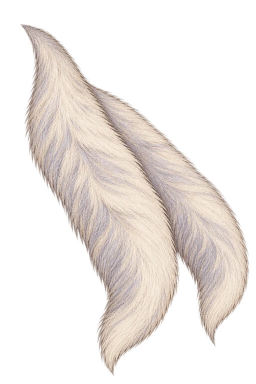
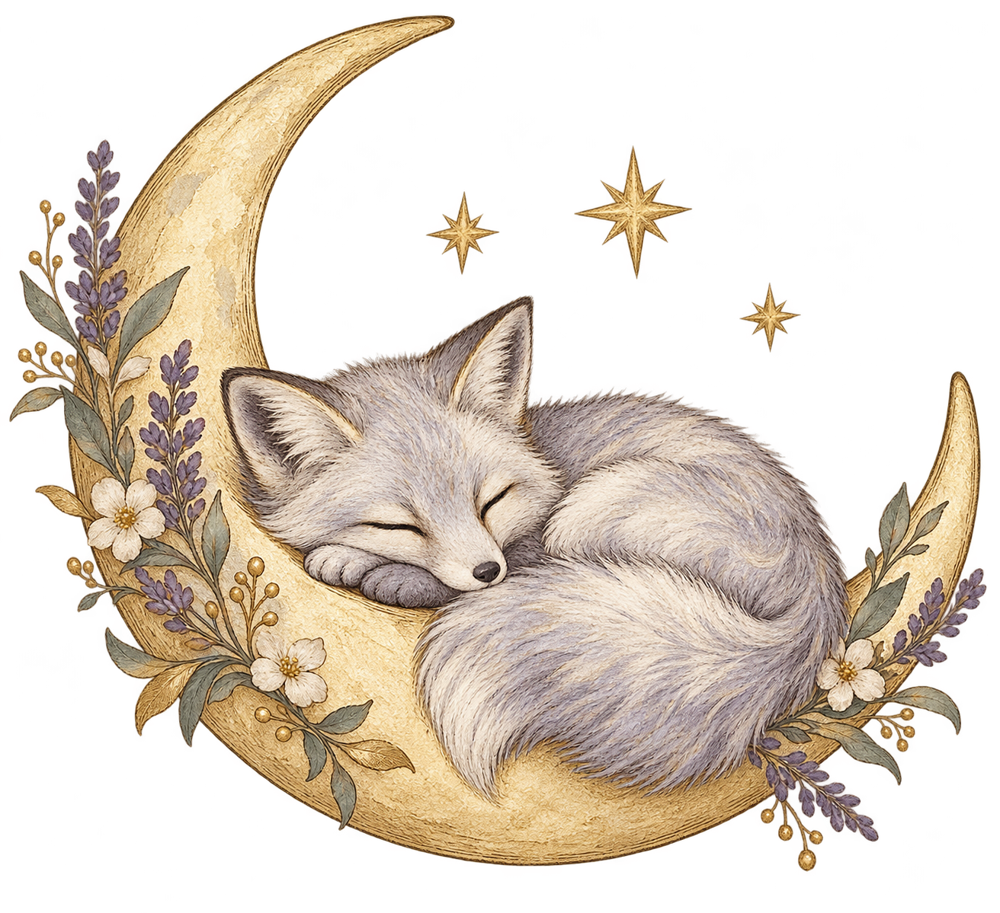

Original illustration + two tucked-away tail tips.


The original image is the unchanged front layer. Only the two small tail tips are new. This is a separate review candidate; the live site hasn’t changed.